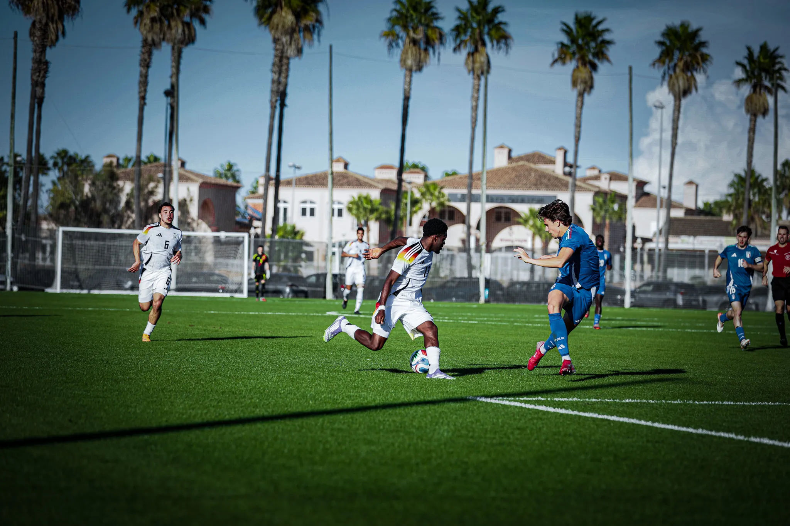
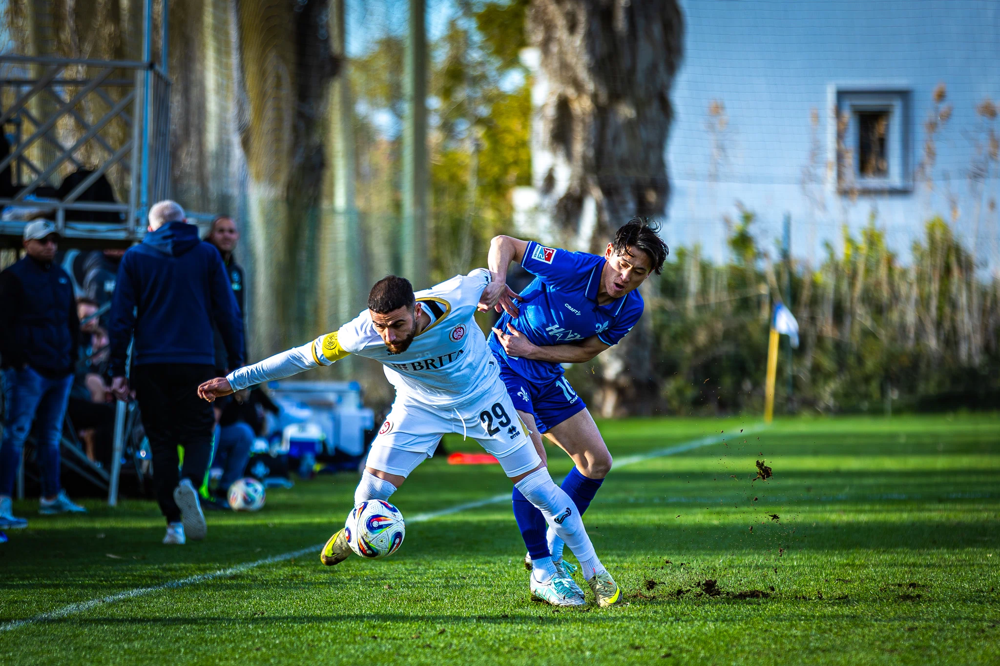
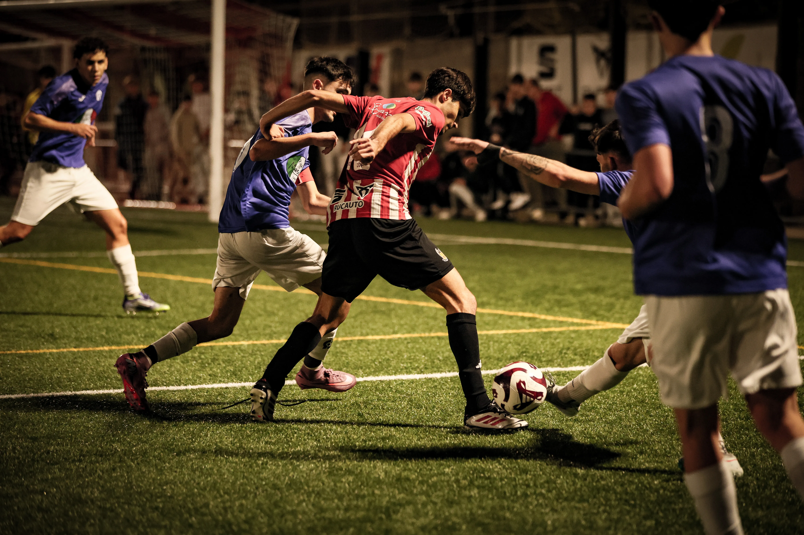

MOMENTUM
High Performance Photography
01
SCROLL
MOTORSPORT — TENNIS — ATHLETICS — FOOTBALL — CAMPAIGNS — EDITORIAL —
MOTORSPORT — TENNIS — ATHLETICS — FOOTBALL — CAMPAIGNS — EDITORIAL —
Galería
/// 01

Fuerza & Precisión
Capturando la tensión muscular en el milisegundo exacto del impacto.
Acerca de mi
No capturo el juego.
Capturo la intensidad.
En un mundo saturado de imágenes, la fotografía deportiva debe trascender la documentación. Mi enfoque busca la estética del esfuerzo, la soledad del atleta y la geometría del movimiento. De la pista a la editorial.